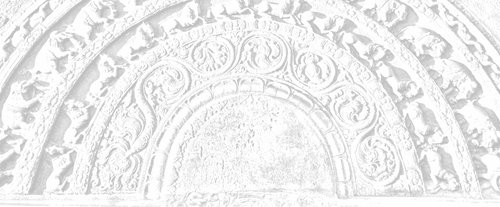

Sermon 14
Namo tassa bhagavato arahato sammāsambuddhassa
Namo tassa bhagavato arahato sammāsambuddhassa
Namo tassa bhagavato arahato sammāsambuddhassaEtaṁ santaṁ, etaṁ paṇītaṁ,
yadidaṁ sabbasaṅkhārasamatho sabbūpadhipaṭinissaggo
taṇhakkhayo virāgo nirodho nibbānaṁ.1“This is peaceful, this is excellent,
namely the stilling of all preparations, the relinquishment of all assets,
the destruction of craving, detachment, cessation, extinction.”
With the permission of the Most Venerable Great Preceptor and the assembly of the venerable meditative monks. This is the fourteenth sermon in the series of sermons on Nibbāna.
In our last sermon we gave a description of the forms of imaginings or methinkings, which the Buddha had compared to an extremely subtle bondage of Māra.
The Yavakalāpisutta of the Saḷāyatanasaṁyutta in the Saṁyutta Nikāya has shown us that all kinds of thoughts concerning existence that stem from this subtle conceit ‘am’, asmimāna, are mere imaginings or methinkings, and that they are called a bondage of Māra, because they have the power to keep beings shackled to existence.2
We have seen how they follow a dichotomy, even like the dilemma posed by the fivefold bondage of Vepacitti, the king of demons. Whether one thinks ‘I shall be’ or ‘I shall not be’, one is in bondage to Māra. Whether one thinks ‘I shall be percipient’ or ‘I shall be non-percipient’, or ‘I shall be neither-percipient-nor-non-percipient’, one is still in bondage to Māra.
There is a dichotomy involved here. The fact that these imaginings, which follow a dichotomy, must be transcended completely, as well as the way to transcend them, has been preached by the Buddha to Venerable Pukkusāti in the Dhātuvibhaṅgasutta of the Majjhima Nikāya.
There is a pithy passage, forming the grand finale of this discourse, in which the Buddha gives a resume. We propose to quote this passage at the very outset as it scintillates with a majestic fervour of the Dhamma.
Yatthaṭṭhitaṁ maññussavā nappavattanti, maññussave kho pana nappavattamāne muni santo ti vuccatīti, iti kho pan’etaṁ vuttaṁ. Kiñ c’etaṁ paṭicca vuttaṁ?
Asmīti bhikkhu maññitam etaṁ, ayam aham asmīti maññitam etaṁ, bhavissan’ti maññitam etaṁ, na bhavissan’ti maññitam etaṁ, rūpī bhavissan’ti maññitam etaṁ, arūpī bhavissan’ti maññitam etaṁ, saññī bhavissan’ti maññitam etaṁ, asaññī bhavissan’ti maññitam etaṁ, nevasaññīnāsaññī bhavissan’ti maññitam etaṁ.
Maññitaṁ, bhikkhu, rogo, maññitaṁ gaṇḍo, maññitaṁ sallaṁ. Sabbamaññitānaṁ tveva, bhikkhu, samatikkamā muni santo ti vuccati.
Muni kho pana, bhikkhu, santo na jāyati na jiyyati na miyyati na kuppati na piheti. Tam pi’ssa bhikkhu natthi yena jāyetha, ajāyamāno kiṁ jiyyissati, ajiyyamāno kiṁ miyyissati, amiyyamāno kiṁ kuppissati, akuppamāno kissa pihessati?
Yatthaṭṭhitaṁ maññussavā nappavattanti, maññussave kho pana nappavattamāne muni santo ti vuccatīti, iti yaṁ taṁ vuttaṁ, idam etaṁ paṭicca vuttaṁ.3
In the Dhātuvibhaṅgasutta we find the Buddha presenting some points as the theme and gradually developing it, analysing, clarifying, and expatiating, as the discourse proceeds. The opening sentence in the above paragraph is a quotation of a part of that original statement of the Buddha, which forms the theme. Here is the rendering:
‘Steadied whereon the tides of imaginings no longer occur in him, and when the tides of imaginings occur no more in him, he is called a sage stilled’, so it was said. And with reference to what was this said?
‘Am’, monk, is something imagined; ‘I am this’ is something imagined; ‘I shall be’ is something imagined; ‘I shall not be’ is something imagined; ‘I shall be possessed of form’ is something imagined; ‘I shall be formless’ is something imagined; ‘I shall be percipient’ is something imagined; ‘I shall be non-percipient’ is something imagined; ‘I shall be neither-percipient-nor-non-percipient’ is something imagined.
The imagined is a disease, the imagined is an abscess, the imagined is a dart. It is with the surmounting of all what is imagined, monk, that a sage is called ‘stilled’.
The sage who is stilled is not born, nor does he age, nor does he die, nor is he shaken, and he has no longing. Even that is not in him whereby he might be born. Not being born, how shall he age? Not aging, how shall he die? Not dying, how shall he be shaken? Being unshaken, what shall he long for?
So it was with reference to this, that it was said ‘steadied whereon the tides of imaginings no longer occur in him, and when the tides of imagining occur no more in him, he is called a sage stilled’.
All this goes to show how relevant the question of imaginings is to the path leading to Nibbāna. This pithy passage, which brings the discourse to a climax, portrays how the sage is at peace when his mind is released by stemming the tides of imaginings. He attains release from birth, decay and death, here and now, because he has realized the cessation of existence in this very world.
It is in this light that we have to interpret the above statement “even that is not in him whereby he might be born”.
Dependent on existence is birth. Due to whatever postulate of existence one can speak of a ‘birth’, even that existence is not in him. Not being born, how can he age? How can he grow old or decay? This is because of the implicit interrelation between conditions.
Here we can flash back to our analogy of a tree, mentioned earlier.4 In order to explain the mutual interrelation between the concepts of birth, decay and death, we brought up a simile, which however is not canonical. That is to say, supposing there is some kind of a tree, the buds, the leaves, the flowers, the fruits and the wood of which could be sold for making one’s livelihood.
If five men trading in those items respectively are made to line up at some particular stage in the growth of this tree and asked whether the tree is too young or too old, the answers given might differ according to the individual standpoint grasped in each case.
It turns out to be a difference of viewpoint. For instance, the man who makes his living by selling the buds would reply that the tree is too old when the buds turn into leaves. Similarly, when it is the season for the leaves to fall and the flowers to bloom, one who trades in leaves might say that the tree is too old. And when flowers turn into fruits, the florist’s viewpoint would be similar. In this way one can understand how this concept changes according to what one grasps – that there is an implicit relativity about it.
Now, as for this sage, he has given up everything that he had grasped. Grasping has been given up completely. Imagining, too, has been abandoned. Hence, not being ‘born’, how shall he age? The sage has no postulate of existence. Since there is no existence, there is no ‘birth’. Because there is no birth, there is no decay.
It is a well known fact that the term jarā implies both growth and decay. It is after setting a limit that we speak of a process of ‘decay’, after ‘growth’. This limit, however, varies according to our individual standpoint grasped – according to our point of view. That is what we have tried to illustrate by this analogy.
Then we have the statement “not aging, how shall he die?” Since decay is an approach to death, where there is no decay, there is no death. The fact that there is no death we have already seen in our exposition of the significance of the verses quoted above from the Adhimutta Theragāthā.5 When the bandits got round to kill the Venerable Adhimutta, he declared:
Na me hoti ahosin’ti,
bhavissan’ti na hoti me,
saṅkhārā vibhavissanti,
tattha kā paridevanā?6It does not occur to me ‘I was’,
Nor does it occur to me ‘I shall be’,
Mere preparations will get destroyed,
What is there to lament?
This declaration exemplifies the above statement. When all graspings are given up, there is no ‘decay’ or ‘death’.
Amiyyamāno kiṁ kuppissati, “not dying, how shall he be shaken?” The verb kuppati does not necessarily mean ‘getting annoyed’. Here it means to be ‘shaken up’ or ‘moved’. When one holds on to a standpoint, one gets shaken up if someone else tries to dislodge him from that standpoint.
The deliverance in Nibbāna is called akuppā cetovimutti, the unshakeable deliverance of the mind.7 All other deliverances of the mind, known to the world, are shakeable, kuppa. They are unsteady. They shake before the pain of death. Only Nibbāna is called akuppā cetovimutti, the unshakeable deliverance of the mind.
So this peaceful sage, the arahant, established in that concentration of the fruit of arahanthood, arahatta phalasamādhi, which is known as the influx-free deliverance of the mind, anāsavā cetovimutti, and is endowed with the wisdom proper to arahanthood, paññāvimutti, ‘deliverance through wisdom’, is unshaken before death. His mind remains unshaken. That is why the arahant Thera Venerable Adhimutta fearlessly made the above declaration to the bandits.
Now as to the significance of the Buddha’s statement:
amiyyamāno kiṁ kuppissati, akuppamāno kissa pihessati,
not dying, how shall he be shaken, and being unshaken, what shall he long for?
When there is no shock, no agitation or trembling, what does one long for? Pihā means longing, desiring for something or other. In this context it refers to that longing which arises at the moment of death in one who has not destroyed craving.
It is as a consequence of that longing that he enters some form of existence, according to his kamma. That longing is not there in this sage, for the simple reason that he is unshaken before death. He has nothing to look forward to. No desires or longings. Akuppamāno kissa pihessati, “being unshaken, what shall he long for?”
It is obvious, therefore, that the concepts of birth, decay and death become meaningless to this sage. That is precisely why he is at peace, having transcended all imaginings.
All this goes to show, that Nibbāna is a state beyond decay and death. We can clearly understand from this discourse why Nibbāna is known as a decayless, deathless state, realizable in this very world. That sage has conquered decay and death here and now, because he has realized the cessation of existence, here and now.
This is something extremely wonderful about the arahant. He realizes the cessation of existence in his attainment to the fruit of arahanthood. How does he come to realize the cessation of existence? Craving is extinct in him, hence there is no grasping. Where there is no grasping, there is no existence. Because there is no existence, birth, decay and death, along with sorrow and lamentation, cease altogether.
From the foregoing we could well infer that all those concepts like birth, decay, death, sorrow, lamentation, pain, grief and despair, come about as a result of a heap of pervert perceptions, pervert thoughts and pervert views, based on the conceit of an existence, the conceit ‘am’.
These three kinds of perversions known as saññāvipallāsa, cittavipallāsa and diṭṭhivipallāsa give rise to a mass of concepts of an imaginary nature.8 The entire mass of suffering, summed up by the terms birth, decay, death, sorrow, lamentation, pain, grief and despair, are basically of a mental origin.
For an illustration of this fact, we can go back to our analogy of winding some strands into a rope, mentioned earlier.9 We pointed out that in the case of some strands that are being mistakenly wound in the same direction, it is the grasp in the middle that gives at least a semblance of a rope to it. So long as there is no such grasping, the strands do not become knotty or tense, as they go round and round.
It is only when someone grasps it in the middle that the strands begin to get winded up, knotty and tense. What is called existence, or becoming, bhava, follows the same norm.
True to the law of impermanence, everything in the world changes. But there is something innocent in this change. Impermanence is innocuous in itself. We say it is innocuous because it means no harm to anyone. It is simply the nature of this world, the suchness, the norm. It can do us harm only when we grasp, just as in the case of that quasi rope.
The tenseness between winding and unwinding, arising out of that grasp in the middle, is comparable to what is called bhavasaṅkhāra, ‘preparations for existence’. Saṅkhārā, or preparations, are said to be dependent on avijjā, or ignorance.
Now we can form an idea of the relationship between these two even from this analogy of the rope. The grasp in the middle creates two ends, giving rise to a dilemma. In the case of existence, too, grasping leads to an antinomian conflict. To become a thing, is to disintegrate into another thing.
On a previous occasion we happened to discuss the significance of the term maññanā, me-thinking or imagining, with reference to the verse:
Yena yena hi maññati, tato taṁ hoti aññathā.10 Maññanā itself gives rise to a ‘thing’, which from its very inception goes on disintegrating into another thing.
Just as much as grasping leads to the concept of two ends, to become a thing is to start changing into another thing, that is, it comes under the sway of the law of impermanence. Illustrations of this norm are sometimes to be met with in the discourses, but their significance is often ignored.
The idea of the two ends and the middle sometimes finds expression in references to an ‘above’, ‘below’ and ‘across in the middle’, uddhaṁ, adho, tiriyaṁ majjjhe; or in the terms ‘before’, ‘behind’ and ‘middle’, pure, pacchā, majjhe. Such references deal with some deep aspects of the Dhamma, relating to Nibbāna.
As a good illustration, we may take up the following two verses from the Mettagūmāṇavapucchā in the Pārāyanavagga of the Sutta Nipāta.
Yaṁ kiñci sampajānāsi,
uddhaṁ adho tiriyaṁ cāpi majjhe,
etesu nandiñca nivesanañca
panujja viññāṇaṁ bhave na tiṭṭhe.Evaṁ vihārī sato appamatto,
bhikkhu caraṁ hitvā mamāyitāni,
jātijaraṁ sokapariddavañca
idh’eva vidvā pajaheyya dukkhaṁ.11Whatever you may know to be
Above, below and across in the middle,
Dispel the delight and the tendency to dwell in them,
Then your consciousness will not remain in existence.A monk, endowed with understanding,
Thus dwelling mindful and heedful,
As he fares along giving up all possessions,
Would abandon even here and now
Birth, decay, sorrow, lamentation and suffering.
The word idh’eva occurring in the second verse is highly significant, in that it means the abandonment of all those things here and now, not leaving it for an existence to come.
In the Mahāviyūhasutta of the Sutta Nipāta also a similar emphasis is laid on this idea of ‘here and now’. About the arahant it is said that he has no death or birth here and now:
cutūpapāto idha yassa natthi,12
to whom, even here, there is no death or birth.
In this very world he has transcended them by making those two concepts meaningless.
The word nivesanaṁ, occurring in the first verse, is also significant. It means ‘dwelling’. In consciousness there is a tendency to ‘dwell in’. That is why in some contexts it is said that form is the abode or dwelling place of consciousness,
rūpadhātu kho, gahapati, viññāṇassa oko,
the form element, householder, is the abode of consciousness.13
The terms oka, niketa and nivesana are synonymous, meaning ‘abode’, ‘home’, or ‘dwelling place’.
The nature of consciousness in general is to abide or dwell in. That non-manifestative consciousness, anidassana viññāṇa, however, has got rid of the tendency to abide or dwell in.
Now we can revert to the passage in the Dhātuvibhaṅgasutta, which speaks of an occurrence of tides of imaginings. The passage actually begins with the words:
yatthaṭṭhitaṁ maññussavā nappavattanti,
steadied whereon the tides of imaginings occur no more in him.
The idea behind this occurrence of tides of imaginings is quite often represented by the concept of āsava, influx. Sensuality, kāma, existence, bhava, views, diṭṭhi and ignorance, avijjā, are referred to as ‘influxes’, āsavā, or ‘floods’, oghā. These are the four kinds of saṁsāric habits that continuously flow into the minds of beings.
The above mentioned sutta passage refers to a place steadied whereon the tides of imaginings do not occur or flow in, a place that is free from their ‘influence’. This is none other than Nibbāna, for which one of the epithets used is dīpa, or island.14
Since Nibbāna is called an island, some might take it literally to mean some sort of a place in this world. In fact, this is the general concept of Nibbāna some are prone to uphold in their interpretation of Nibbāna.
But why it is called an island is clearly explained for us by a discourse in the Pārāyanavagga of the Sutta Nipāta, namely the Kappamāṇavapucchā. In this sutta, the Brahmin youth Kappa poses the following question to the Buddha:
Majjhe sarasmiṁ tiṭṭhataṁ
oghe jāte mahabbhaye
jarāmaccuparetānaṁ
dīpaṁ pabrūhi, mārisa.
Tvañca me dīpam akkhāhi
yathayidaṁ nāparaṁ siyā.15To them that stand midstream,
When the frightful floods flow forth,
To them in decay and death forlorn,
An island, sire, may you proclaim.
An island which none else excels,
Yea, such an isle, pray tell me sire.
And this is the Buddha’s reply to it:
Akiñcanaṁ anādānaṁ
etaṁ dīpaṁ anāparaṁ
‘nibbānam’ iti naṁ brūmi
jarāmaccuparikkhayaṁ.16Owning naught, grasping naught,
The isle is this, none else besides,
Nibbāna – that is how I call that isle,
Wherein Decay is decayed and Death is dead.
The Buddha’s reply makes it clear that the term Nibbāna stands for the extinction of craving and grasping. The ideal of owning naught and grasping naught is itself Nibbāna, and nothing else. If the term had any other connotation, the Buddha would have mentioned it in this context.
It is indubitably clear, then, that the epithet dīpaṁ, or island, has to be understood in a deeper sense when it refers to Nibbāna. It is that owning nothing and grasping nothing, that puts an end to decay and death.
Though we have yet to finish the discussion of the Dhātuvibhaṅgasutta, the stage is already set now to understand the significance of a certain brief discourse in the Udāna, which is very often quoted in discussions on Nibbāna. For facility of understanding, we shall take it up now, as it somehow fits into the context.
Atthi, bhikkhave, ajātaṁ abhūtaṁ akataṁ asaṅkhataṁ. No ce taṁ, bhikkhave, abhavissa ajātaṁ abhūtaṁ akataṁ asaṅkhataṁ, nayidha jātassa bhūtassa katassa saṅkhatassa nissaraṇaṁ paññāyetha. Yasmā ca kho, bhikkhave, atthi ajātaṁ abhūtaṁ akataṁ asaṅkhataṁ, tasmā jātassa bhūtassa katassa saṅkhatassa nissaraṇaṁ paññāyati.17
Monks, there is a not-born, a not-become, a not-made, a not-compounded. Monks, if that not-born, not-become, not-made, not-compounded were not, there would be no stepping out here from what is born, become, made and compounded. But since, monks, there is a not-born, a not-become, a not-made, a not-compounded, therefore there is a stepping out from what is born, become, made and compounded.
The terms ajātaṁ, not-born, abhūtaṁ, not-become, akataṁ, not-made, and asaṅkhataṁ, not-compounded, are all epithets for Nibbāna.
The Buddha declares that if not for this not-born, not-become, not-made, not-compounded, there would be no possibility of stepping out or release here, that is, in this very world, from the born, the become, the made and the compounded.
The second half of the passage rhetorically reiterates and emphasises the same fact. Now as to the significance of this profound declaration of the Buddha, we may point out that the terms not-born, not-become, not-made, not-compounded, suggest the emancipation of the arahant’s mind from birth, becoming and preparations, saṅkhārā. They refer to the cessation of birth, becoming and preparations realized by the arahant. So then the significance of these terms is purely psychological.
But the commentator, the Venerable Dhammapāla, pays little attention to the word idha, ‘here’, in this passage, which needs to be emphasized.
The fact that there is a possibility here and now, of stepping out from the state of being born, become, made and compounded, surely deserves emphasis, since, until then, release from decay and death was thought to be possible only in another dimension of existence, that is, after death.
The prospect of stepping out from decay and death here and now in this very world has to be asserted for its novelty, which is why the declaration opens with the word atthi, ‘there is’.
However, most of the scholars who tried to interpret this passage in their discussion on Nibbāna, instead of laying stress on the word idha, ‘here’, emphasize the opening word atthi, ‘there is’, to prove that Nibbāna is some form of reality absolutely existing somewhere.
As that passage from the Dhātuvibhaṅgasutta on maññanā, which we discussed, has shown us, the terms ajātaṁ abhūtaṁ akataṁ and asaṅkhataṁ have to be understood in a deeper sense.
Existence is a conceit deep rooted in the mind, which gives rise to a heap of pervert notions. Its cessation, therefore, has also to be accomplished in the mind and by the mind. This is the gist of the Buddha’s exhortation.
Let us now come back to the Dhātuvibhaṅgasutta to discuss another facet of it. We started our discussion with the grand finale of that discourse, because of its relevance to the question of maññanā.
However, as a matter of fact, this discourse preached by the Buddha to the Venerable Pukkusāti is an exposition of a systematic path of practice for the emancipation of the mind from imaginings or maññanā.
The discourse begins with the declaration:
chadhāturo ayaṁ, bhikkhu, puriso
monk, man as such is a combination of six elements.18
The worldling thinks that a being, satta (Sanskrit sattva), exists at a higher level of reality than inanimate objects.
Now what did the Buddha do to explode this concept of a being in his discourse to Venerable Pukkusāti? He literally thrashed out that concept, by breaking up this ‘man’ into his basic elements and defining him as a bundle of six elements, namely earth, water, fire, air, space and consciousness.
As the discourse proceeds, he explains in an extremely lucid manner how one can detach one’s mind from each of these elements. We happened to mention at the very outset that the depth of the Dhamma has to be seen through lucidity and not through complicated over-drawings. In fact, this discourse exhibits such lucidity.
The meditation subject of elements, which grew in complexity at the hands of later Buddhist philosophers, who took to atomistic analysis of a speculative sort, is presented here in this Dhātuvibhaṅgasutta with a refreshing clarity and lucidity. Here it is explained in such a way that one can directly experience it.
For instance in describing the earth element, the Buddha gives as examples of the internal earth element such parts of the body as head hairs, body hairs, nails and teeth. Because the external earth element hardly needs illustration, nothing in particular has been mentioned as to that aspect. Anyone can easily understand what is meant by it. There is no attempt at atomistic analysis.
However, the Buddha draws special attention to a certain first principle of great significance.
Yā c’eva kho pana ajjhattikā paṭhavīdhātu, yā ca bāhirā paṭhavīdhātu, paṭhavīdhātur ev’esā. Taṁ netaṁ mama, neso ’ham asmi, na me so attā ti evam etaṁ yathābhūtaṁ sammappaññāya daṭṭhabbaṁ. Evam etaṁ yathābhūtaṁ sammappaññāya disvā paṭhavīdhātuyā nibbindati, paṭhavīdhātuyā cittaṁ virājeti.19
That which is the internal earth element, and that which is the external earth element, they are both just the earth element itself. And that should be seen as it is with right wisdom, thus: ‘this is not mine’, ‘I am not this’, ‘this is not my self’. Having seen thus with right wisdom as it is, he becomes dejected with the earth element, he detaches his mind from the earth element.
It is this first principle that is truly important and not any kind of atomic theory. This resolution of the internal/external conflict has in it the secret of stopping the saṁsāric vortex of reiterated becoming, saṁsāravaṭṭa. It is due to the very discrimination between an ‘internal’ and an ‘external’ that this saṁsāric vortex is kept going.
Now in the case of a vortex, what is found inside and outside is simply water. But all the same there is such a vehement speed and activity and a volley of changes going on there.
So it is the case with this ‘man’. What is found in his body is the earth element. What is to be found outside is also the earth element. And yet, the ordinary person sees quite a wide disparity between the two. Why is that? That is because of the illusory nature of consciousness.
We have devoted a number of sermons to explain the relationship between consciousness and name-and-form. We happened to speak of name-and-form as a reflection or a self-image.20 Even as one who comes before a mirror, on seeing his reflection on it, would say: ‘this is mine’, ‘this am I’, ‘this is my self’, the worldling is in the habit of entertaining cravings, conceits and views.
In fact the purpose of cravings, conceits and views is to reinforce the distinction between an internal and an external. Already when one says ‘this is mine’, one discriminates between the ‘this’ and ‘I’, taking them to be separate realities. ‘This am I’ and ‘this is my self’ betray the same tacit assumption.
Just as by looking at a mirror one may like or dislike the image appearing on it, these three points of view give rise to various pervert notions. All this because of the perpetuation of the distinction between an internal and an external, which is the situation with the ordinary worldling.
Since cravings, conceits and views thus reinforce the dichotomy between an internal and an external, the Buddha has upheld this principle underlying the meditation on the four elements, to resolve this conflict.
The fact that with the resolution of this conflict between the internal and the external concerning the four elements the mind becomes emancipated is put across to us in the following verse in the Tālapuṭa Theragāthā.
Kadā nu kaṭṭhe ca tiṇe latā ca
khandhe ime ‘haṁ amite ca dhamme
ajjhattikān’ eva ca bāhirāni ca
samaṁ tuleyyaṁ, tad idaṁ kadā me?21
This verse gives expression to Venerable Tālapuṭa Thera’s aspiration to become an arahant. It says:
When shall I weigh as equal all these
Limitless things both internal and external,
Twigs, grass, creepers and these aggregates,
O! when shall that be for me?
It is at the stage of arahanthood that the internal and the external appear alike. That is precisely why the Venerable Adhimutta Thera, whom we quoted earlier, uttered the lines:
Tiṇakaṭṭhasamaṁ lokaṁ,
yadā paññāya passati.22When one sees through wisdom,
The world to be comparable to grass and twigs.
The comparison is between the internal world of the five aggregates, or this conscious body, and the inanimate objects outside.
Just as in the case of the four elements earth, water, fire and air, the Buddha pointed out a way of liberating one’s mind from the space element with the help of similar illustrations. In explaining the space element, too, he gave easily intelligible examples.
The internal space element is explained in terms of some apertures in the body that are well known, namely those in the ears, nose and the mouth.23
Apart from such instances, he did not speak of any microscopic space element, as in scientific explanations, probably because it is irrelevant. Such an analysis is irrelevant for this kind of reflection.
Here we have to bear in mind the fact that perception as such is a mirage.24 However far one may go on analysing, form and space are relative to each other like a picture and its background. A picture is viewed against its background, which is relative to it. So also are these two concepts of form and space. Consciousness provides the framework for the entire picture.
By way of clarification we may allude to the pre-Buddhistic attempts of Yogins to solve this problem, solely through the method of serenity, samatha, ignoring the method of insight, vipassanā. The procedure they followed was somewhat on these lines:
They would first of all surmount the concept of form or matter through the first four mental absorptions, or jhānas. Then as they inclined towards the formless, what confronted them first was space. A very appropriate illustration in this context would be the method of removing the sign of the kasiṇa and attending to the space left by that removal as ‘infinite’ or ‘boundless’, in order to arouse the base of infinity of space.25
This mode of contemplation of space betrays the fact that space is also something made up, or prepared, saṅkhata. Whatever is prepared, saṅkhata, is thought out and mind made, abhisaṅkhataṁ abhisañcetayitaṁ.
The Buddha proclaimed that there is only one asaṅkhata, unprepared, that is Nibbāna.26 But later philosophers confounded the issue by taking space also to be asaṅkhata.27 They seem to have ignored its relation to the mind in regarding causes and conditions as purely external things.
Here we see the relativity between form and space. Like the picture and its background, form and space stand relative to each other. All this is presented to us by attention,
manasikārasambhavā sabbe dhammā,28
all things originate from attention.
Some of the later speculations about the nature of the space element are not in consonance with the basic principles outlined in the Dhamma. Such confusion arose probably due to a lack of understanding of the term asaṅkhata.
Now if we are to say something more about this particular discourse, what remains after detaching one’s mind from these five elements, namely earth, water, fire, air and space, is a consciousness that is extremely pure.
The basic function of consciousness is discrimination. It distinguishes between the bitter and the sweet, for instance, to say: ‘this is bitter’, ‘this is sweet’. Or else it distinguishes between the pleasant, the unpleasant and the neutral with regard to feelings: ‘this is pleasant’, ‘this is unpleasant’, ‘this is neither-unpleasant-nor-pleasant’.
Now that the five elements earth, water, fire, air and space, which create discrete objects as the outward manifestations of consciousness, have been totally removed, the residual function of consciousness amounts to a discrimination between the three grades of feelings.
The sage who has arrived at this stage of progress on the path to Nibbāna takes the next step by observing these three kinds of feelings, pleasant, unpleasant and neither-unpleasant-nor-pleasant, as they arise and cease dependent on specific contacts, thereby gradually bringing the mind to equanimity.
He brings his mind to a stage of radiant equanimity. But even this equanimity he does not grasp by way of me-thinking or imagining. The phrase used in this connection is:
visaṁyutto naṁ vedeti,
being detached he experiences it.29
There is a detachment, an aloofness, even in going through those sensations. This is clearly expressed in that context.
For instance, in the case of a pleasant feeling, it is said:
aniccā ti pajānāti, anajjhositā ti pajānāti, anabhinanditā ti pajānāti,
he understands it to be impermanent, he understands it to be uninvolved, he understands it to be unrejoiced.
With the understanding of impermanence, conceit goes down. The non-involvement does away with the views. The absence of rejoicing suggests the extinction of craving.
So the attainment of arahanthood is in effect the cessation of that consciousness itself. That consciousness is divested of its most primary function of discriminating between the three grades of feeling, pleasant, unpleasant and neither-unpleasant-nor-pleasant.
The term visaṁyutto connotes disjunction, suggestive of dispassion and detachment. In this way, the Dhātuvibhaṅgasutta clearly brings out the relevance of the question of maññanā to the path leading to Nibbāna.
In some contexts, this practice of desisting from me-thinking or imagining is called atammayatā, non-identification. This is the term used by the Buddha throughout the Sappurisasutta of the Majjhima Nikāya. For instance we read there:
Sappuriso ca kho, bhikkhave, iti paṭisañcikkhati: nevasaññā-nāsaññāyatana-samāpattiyā pi kho atammayatā vuttā Bhagavatā. Yena yena hi maññanti, tato taṁ hoti aññathā ti.30
The good man reflects thus: the principle of non-identification has been recommended by the Buddha even with regard to the attainment of the sphere of neither-perception-nor-non-perception thus: in whatever way they imagine about it, thereby it turns otherwise.
The ‘good man’ referred to here is the noble disciple on the supramundane path.
This term tammaya needs to be clarified in order to understand the significance of this statement. It is derived from tad maya, literally ‘made of that’ or ‘of that stuff’. It is on a par with such terms as sovaṇṇamaya, golden, and rajatamaya, silvery.
When one has cravings, conceits and views about something, he practically becomes one with it due to that very grasping. In other words, he identifies himself with it. That is why the person who has imaginings about the sphere of neither-perception-nor-non-perception, which he has attained, thinks “I am one who has attained the sphere of neither-perception-nor-non-perception”.
He thereby has conceit, which is a defilement in itself. As a result, when he loses his mastery of that attainment, he becomes disconcerted. It is for that reason that the Buddha had enjoined that one should cultivate the attitude of atammayatā, or non-identification, even with regard to the attainment of the sphere of neither-perception-nor-non-perception.
The arahant is called atammayo in the sense that he does not identify himself with anything. An arahant cannot be identified with what he appears to possess. This is well expressed by the following verse in the Devadūtavagga of the Aṅguttara Nikāya.
Pasayha Māraṁ abhibhuyya antakaṁ
yo ca phusī jātikkhayaṁ padhānavā
sa tādiso lokavidū sumedho
sabbesu dhammesu atammayo muni.31That ardent sage who has touched the extinction of birth,
Having overpowered Māra and conquered the Ender,
That Such-like one, the wise sage, the knower of the world,
Is aloof in regard to all phenomena.
The idea of this aloofness can be presented in another way, that is as detachment from the seen, the heard, the sensed and the cognized, diṭṭha, suta, muta, viññāta.
One of the most important suttas that merits discussion in this respect is the Bāhiyasutta in the Bodhivagga of the Udāna. It is generally acclaimed as an extremely profound discourse.
The ascetic Bāhiya Dārucīriya came all the way from far off Suppāraka to see the Buddha. When he reached Jetavana monastery at Sāvatthī, he heard that the Buddha had just left on his alms-round. Due to his extreme eagerness, he ran behind the Buddha and, on meeting him, fell prostrate before him and begged: “May the Exalted One preach to me the Dhamma.”
The Buddha, however, seemed not so responsive, when he remarked: “Now it is untimely, Bāhiya, we are on our alms-round.”
Some might be puzzled by this attitude of the Buddha. But most probably it is one of those skilful means of the Buddha, suggestive of his great compassion and wisdom. It served to tone down the overenthusiastic haste of Bāhiya and to arouse a reverential respect for the Dhamma in him.
Bāhiya repeated his request for the second time, adding: “I do not know whether there will be a danger to the Exalted One’s life or to my own life.” For the second time the Buddha refused.
It was when Bāhiya made his request for the third time that the Buddha acceded to it by giving a terse discourse, saṅkhitta Dhammadesanā, of extraordinary depth. The exhortation, brief and deep as it is, was quite apt, since Bāhiya Dārucīriya belonged to that rare category of persons with quick understanding, khippābhiññā.32
Tasmātiha te, Bāhiya, evaṁ sikkhitabbaṁ: diṭṭhe diṭṭhamattaṁ bhavissati, sute sutamattaṁ bhavissati, mute mutamattaṁ bhavissati, viññāte viññātamattaṁ bhavissati. Evaṁ hi te, Bāhiya,, sikkhitabbaṁ.
Yato kho te, Bāhiya, diṭṭhe diṭṭhamattaṁ bhavissati, sute sutamattaṁ bhavissati, mute mutamattaṁ bhavissati, viññāte viññātamattaṁ bhavissati, tato tvaṁ Bāhiya na tena. Yato tvaṁ Bāhiya na tena, tato tvaṁ Bāhiya na tattha. Yato tvaṁ Bāhiya na tattha, tato tvaṁ Bāhiya nev’idha na huraṁ na ubhayamantarena. Es’ev’anto dukkhassa.33
No sooner had the Buddha finished his exhortation, the ascetic Bāhiya attained arahanthood then and there. Let us now try to unravel the meaning of this abstruse discourse.
The discourse starts off abruptly, as if it had been wrested from the Buddha by Bāhiya’s repeated requests.
Tasmātiha, Bāhiya, evaṁ sikkhitabbaṁ,
well then, Bāhiya, you had better train yourself thus.
And what is that training?
In the seen there will be just the seen, in the heard there will be just the heard, in the sensed there will be just the sensed, in the cognized there will be just the cognized. Thus, Bāhiya, should you train yourself.
It is as if the Buddha had addressed the ascetic Bāhiya in the terminology of the ariyans and established him on the path to Nibbāna. Here the term muta, or ‘sensed’, stands for whatever is experienced through the tongue, the nose, and the body.
The basic principle in this training seems to be the discipline to stop short at bare awareness, diṭṭhe diṭṭhamattaṁ, sute sutamattaṁ, etc. The latter half of the discourse seems to indicate what happens when one goes through that training. The entire discourse is a presentation of the triple training of morality, concentration and wisdom in a nutshell.
And when to you, Bāhiya, there will be in the seen just the seen, in the heard just the heard, in the sensed just the sensed, in the cognized just the cognized, then, Bāhiya, you are not by it. And when you are not by it, you are not in it. And when, Bāhiya, you are not in it, then, Bāhiya, you are neither here, nor there, nor in between. This itself is the end of suffering.
As a literal translation this appears cryptic enough to demand an explanation. Let us first of all give a few clues to unravel the puzzle.
The terms ‘by it’, tena, and ‘in it’, tattha, are rather elliptical. Though unexpressed, they seem to imply the relevance of maññanā to the whole problem.
As we happened to mention earlier, imaginings or methinkings by way of craving, conceit and views, lead to an identification, for which the term used is tammayatā. Such an identification makes one unsteady, for when the thing identified with is shaken, one also gets shaken up.
This kind of imagining ‘in terms of’ is indicated by the elliptical tena, for we get a clear proof of it in the following two lines from the Jarāsutta in the Aṭṭhakavagga of the Sutta Nipāta.
Dhono na hi tena maññati
yad idaṁ diṭṭhasutaṁ mutesu vā.34
Dhona is a term for the arahant as one who has ‘shaken off’ all defilements. So these lines could be rendered as follows:
The arahant, the one who has shaken off,
Does not imagine ‘in terms of’
Whatever is seen, heard and sensed.